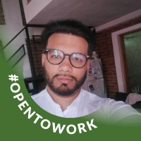

Queridos amigos y posibles colaboradores.
Es un placer dirigirme a ustedes en estas líneas para compartir un poco sobre quién soy y qué represento en el mundo profesional y personal.
Mi nombre es Kervin Briceño, y nací en la vibrante ciudad de Caracas, Venezuela, en el año 1991. Desde una edad temprana, he llevado conmigo un espíritu emprendedor y una curiosidad insaciable por aprender y crecer.
Me gradué como Licenciado en Comunicación Social, con especialización en medios impresos, de la respetada Universidad Santa María. Esta experiencia académica me brindó una base sólida en comunicación y un profundo aprecio por el poder de las palabras y las historias.
Después de mi graduación, tuve el privilegio de trabajar durante un año en el Banco Central de Venezuela, donde adquirí valiosas habilidades en análisis y gestión de información.
Sin embargo, mi sed de conocimiento y aventura me llevó a explorar más allá de las fronteras de mi país. Viajé por Sudamérica, sumergiéndome en diferentes culturas y trabajando en diversos roles, desde redactor hasta vendedor de servicios de telecomunicaciones en empresas como Bital de Perú. Esta experiencia no solo amplió mis horizontes, sino que también me enseñó la importancia de la adaptabilidad y la diversidad en un mundo globalizado.
A pesar de las experiencias enriquecedoras, sentía que aún tenía un sueño por cumplir: estudiar y forjar una carrera en el extranjero. Fue entonces cuando mi mirada se posó en Argentina, una tierra llena de pasión por el fútbol y la vida. Ahora, estoy a punto de completar mi carrera técnica en programación en la prestigiosa Universidad Tecnológica Nacional de Argentina, un logro que me llena de orgullo y emoción por lo que está por venir.
En paralelo a mis estudios, he estado trabajando en un proyecto personal que me apasiona profundamente. Se trata de tres pequeños juegos simples que tienen como objetivo crear una comunidad gamer inclusiva y vibrante, donde la creatividad y la camaradería sean los pilares fundamentales.
Mirando hacia el futuro, mi visión es seguir creciendo y contribuyendo en el campo de la tecnología y los medios de comunicación, aprovechando mis habilidades y experiencias para hacer una diferencia positiva en el mundo que me rodea.
Estoy abierto a nuevas oportunidades y colaboraciones que me permitan seguir aprendiendo y creciendo en este apasionante viaje llamado vida. Si desean contactarme para discutir posibles proyectos o simplemente para intercambiar ideas, no duden en hacerlo a través de mi correo electrónico kervinstilver1991@gmail.com o mi número de teléfono [1133849111].
Agradezco sinceramente su tiempo y consideración, y espero con entusiasmo la posibilidad de conectarnos y trabajar juntos en el futuro.
Con los mejores deseos.
Kervin Briceño
